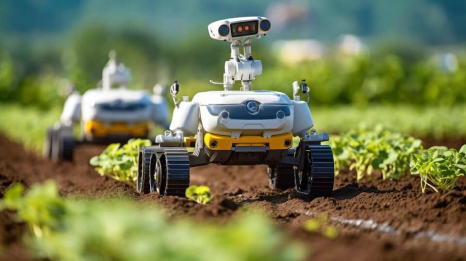

ROBÔS FAZENDEIROS OU AGRÍCOLAS

Os robôs fazendeiros, ou robôs agrícolas, são uma tecnologia cada vez mais relevante no setor agrícola. Eles são dispositivos automatizados projetados para realizar uma variedade de tarefas agrícolas, desde o plantio e irrigação até a colheita e o manejo de culturas. Esses robôs são equipados com uma variedade de sensores, câmeras e ferramentas especializadas que lhes permitem operar de forma autônoma ou semi-autônoma.